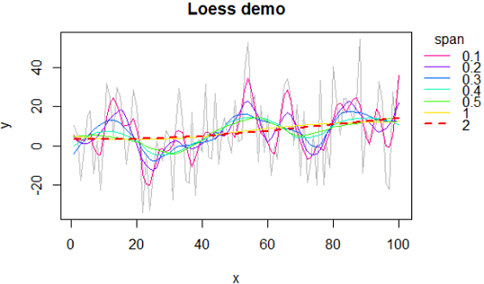
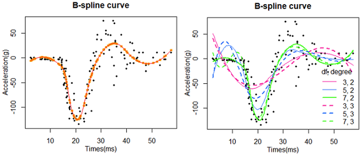

R统计 抽样、模拟与拟合
目录
要点: 为了探究真实数据的规律，我们需要抽样、模拟与拟合。[]
统计
R中 var(X) 和 DX = E(X^2) - (E(X))^2 为什么不一样？
x=c(1,2,3,4,5);x
sd(x)**2 #2.5
var(x) #2.5
mean(x**2)-(mean(x))**2 #2
# 为什么不一样呢？
sum((x-mean(x))**2)/length(x) #2 (除以n) 是样本方差
sum((x-mean(x))**2)/(length(x)-1) #2.5 (除以 n-1) 是总体方差的无偏估计
#########
# python中的numpy默认使用的是样本方差(除以n)
np.var([1,2,3,4,5]) #2.0
# 但是设置减少的自由度为1后，就是总体方差的无偏估计了
np.var([1,2,3,4,5], ddof=1) #2.5
## ddof : int, optional
## "Delta Degrees of Freedom": the divisor used in the calculation is ``N - ddof``, where ``N`` represents the number of elements. By default `ddof` is zero.
抽样
很多使用随机的地方在函数内部，不看源代码的话是找不到的。
set.seed(123456789) # 设置随机种子，保证代码的可重复性 > sample(1:10, size=8) #默认不重复抽样 [1] 4 2 7 3 10 5 9 8 > sample(1:10, size=8, replace = T) #允许重复抽样 [1] 3 9 10 10 5 7 6 10
模拟
正态分布 Normal Distribution
dnorm(x, mean, sd) 概率密度 pnorm(x, mean, sd) 累积 qnorm(p, mean, sd) 分位数(由左侧曲线下面积p，查x值) rnorm(n, mean, sd) 产生随机数 > set.seed(202406) > rnorm(n=10, mean=5, sd=1) [1] 5.602936 5.620374 4.837991 3.681376 6.021754 5.912807 3.536622 5.408601 4.522387 4.488347 > rnorm(n=2000, mean=5, sd=1) |> hist(n=100) #查看数据的分布
二项分布
拟合
LOESS (locally estimated scatterplot smoothing) 平滑化
Local Polynomial Regression Fitting 局部加权回归散点平滑法(locally weighted scatterplot smoothing，LOWESS或LOESS)。
参数 span 越大，平滑化程度越大，也就是越失真。
个人感觉: span大于0.8就不可信了。点击查看应用demo
实例: Seurat v4 FindVariableFeatures()函数中的 vst 算法找HVG时，使用loess() 平滑化 sd~mean 曲线
not.const = hvf.info$variance > 0 fit = loess( formula = log10(x = variance) ~ log10(x = mean), data = hvf.info[not.const, ], span = loess.span ) hvf.info$variance.expected[not.const] = 10 ^ fit$fitted
示例：loess() 拟合曲线
步骤: # 设置x坐标: x = seq(1, length(y) ); 如果已有x则跳过该步骤; # 建模型 model1=loess(y ~ x, span=span) # 预测新y值 y2=predict( model1 ) # 画图 plot(x,y2, lty='l')

#############
# LOESS 平滑化 核心函数
addLine=function(arr, span, color, ...){
model2=loess(arr ~ seq(1, length(arr)), span=span)
y2=predict( model2 )
lines(y2, type="l", col=color, ...)
}
# settings
colors=rev(rainbow(7, start=0, end=9/10)); length(colors);
#barplot(rep(1,length(colors)), col=colors)
# make data
set.seed(10)
arr=rnorm(100, 10, 20);arr
#draw
par(mar=c(4,4,3,6))
plot(arr, type="l", xlab="x", ylab="y", col='grey', main="Loess demo")
#add line: arr, span, color
spans=c((1:5)/10,1,2 ); length(spans)
line=c(rep(1,6), 2,2); length(line)
for(i in 1:length(spans)){
addLine(arr, spans[i], colors[i],lwd=line[i],lty=line[i])
}
#add legend
pos=par('usr');pos
legend(x=pos[2], y=pos[4], title="span",
xpd=T, #show outside figure
bty="n", #box type
col=colors, legend=spans, lty=line, lwd=line)
局部加权回归LOWESS 平滑化
图略。参数和loess一致时，图也基本一致。
f: the smoother span. This gives the proportion of points in the plot which influence the smooth at each value. Larger values give more smoothness.
y=mtcars$mpg # 造数据
set.seed(10) # 或则模拟一组
y=rnorm(40, 10, 20);y
#
n=length(y)
x=1:n
#
par(mar=c(4,4,3,6))
plot(x,y, type='o',col='grey',main="lowess demo")
#f 取不同的参数
lines(lowess(x,y, f = 0.2), col ='orange')
lines(lowess(x,y, f = 0.4), col ='blue')
lines(lowess(x,y, f = 0.6), col ='green')
lines(lowess(x,y, f = 0.8), col ='purple')
lines(lowess(x,y, f = 1), col ='cyan')
lines(lowess(x,y, f = 2), col ='red', lty=2, lwd=2)
#
pos=par('usr');pos
legend(x=pos[2], y=pos[4], title="f value", lty=1,
xpd=T, #show outside figure
bty="n", #box type
col=c('orange','blue','green','purple','cyan','red'),
legend=c(0.2,0.4,0.6,0.8,1,2))
二次B样条(B-Spline)拟合
B样条曲线是贝塞尔曲线的升级版，引入了权重因子，赋予了我们局部修改的灵活性。这意味着，改变其中一个控制点只会影响曲线的一部分，而不是整体。B样条是拟合光滑方程的一个常用的强大工具。 B-splines are a powerful tool commonly used in statistics to model smooth functions.
在数学的子学科数值分析里，B-样条是样条曲线一种特殊的表示形式。它是B-样条基曲线的线性组合。
B样条曲线曲面具有几何不变性、凸包性、保凸性、变差减小性、局部支撑性等许多优良性质。B样条曲线能达到C1平滑。
要理解B样条曲线，我们需要了解三个关键要素：
- 阶数： 阶数决定了曲线的平滑度。 - 节向量： 它控制曲线的长度和形状，定义了控制点之间的关系。 - 控制点： 这些点决定了曲线的形状。
- Polynomial degree - The user has freedom to determine the polynomial degree that will be used to interpolate their data to a B-spline curve model. A higher polynomial degree generally gives more accurate results, although there is a risk of overfitting between data points when the data is sparse. 自由度越高越平滑，但是太高会过拟合。
- Knots - These are points along a B-spline curve where the curve sections meet and connect. All B-splines have at least two knots, which will define the end points of the B-spline curve. 节点，曲线的连接处，至少2个。
- Control points - The control points are like the data used for interpolation; they will determine the shape of the resulting B-spline curve and the curve may not intersect with these points. 控制点，曲线外的点，控制曲线形状。
- Basis functions - These are the polynomial functions to be summed in an iterative fashion in each curve section. The knots define where a new basis function “activates” and begins contributing to the overall curvature of the B-spline curve. 基本方程，多项式方程，递归加和。

# bs(x, df = NULL, knots = NULL, degree = 3, intercept = FALSE,
# Boundary.knots = range(x), warn.outside = TRUE)
#df: degrees of freedom; one can specify df rather than knots; 建议指定自由度(df)，而不是节点(knots)
#degree: degree of the piecewise polynomial—default is 3 for cubic splines. 分段多项式的次数，默认是三次样条。
library(MASS)
head(mcycle)
x=mcycle$times
y=mcycle$accel
##################
# Fig1, df=7, degree=2
#plot(mcycle, pch=19, cex=0.5, main="")
plot(x, y, pch=19, cex=0.5, mgp=c(2,1,0),
xlab = "Times(ms)", ylab = "Acceleration(g)", main="B-spline curve")
library(splines)
#bs(x, df = 5)
bs.model = lm(y ~ bs(x, df = 7, degree = 2), data = NULL)
# df=7 有7个控制点，至少是2
# degree=2 是二次B样条曲线
summary(bs.model)
# fitted value of each x
#lines(x, fitted( bs.model ), pch=21, cex=1, col="orange", lwd=2)
points(x, fitted( bs.model ), type="p", pch=20, cex=1, col="orange", lwd=2)
# more points: example of safe prediction
x_2 = seq(min(x), max(x), length.out = 200)
lines(x_2, predict(bs.model, data.frame(x = x_2)), lwd=1.5, col="red")
##################
# Fig2: more curves
addLine=function(df, degree, ...){
bs.model = lm(y ~ bs(x, df = df, degree = degree), data = NULL)
x_2 = seq(min(x), max(x), length.out = 200)
lines(x_2, predict(bs.model, data.frame(x = x_2)), ...)
}
# settings
#colors=rev(rainbow(7, start=0, end=9/10)); length(colors);
colors=c("#FF0099", "#8000FF", "#0066FF", "#00FFB2", "#33FF00", "#FFE500", "#FF0000")[c(1,3,5)]
#barplot(rep(1,length(colors)), col=colors)
par(mar=c(4,4,3,2))
plot(x, y, pch=19, cex=0.5, mgp=c(2,1,0),
xlab = "Times(ms)", ylab = "Acceleration(g)", main="B-spline curve")
#addLine(df=2, degree = 2, col=colors[1])
addLine(df=3, degree = 2, col=colors[1])
addLine(df=5, degree = 2, col=colors[2])
addLine(df=7, degree = 2, col=colors[3], lwd=2)
#
addLine(df=3, degree = 3, col=colors[1], lty=2, lwd=2)
addLine(df=5, degree = 3, col=colors[2], lty=2, lwd=2)
addLine(df=7, degree = 3, col=colors[3], lty=2, lwd=2)
#
#add legend
legend("bottomright", title="df, degree",
xpd=T, #show outside figure
bty="n", #box type
col=c(colors, colors),
legend=c( paste0(c(3,5,7),", 2"), paste0(c(3,5,7),", 3") ),
lty=c( rep(1,3), rep(2,3) ),
lwd=c( rep(1,2), rep(2,4) ))
参考资料
https://zhuanlan.zhihu.com/p/479549742 曲线拟合 | 二次B样条拟合曲线 https://blog.csdn.net/wangjunliang/article/details/139639327